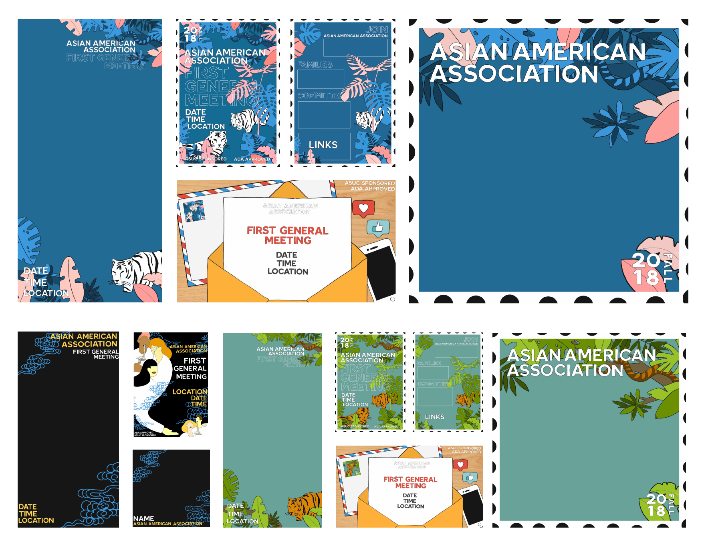

Event Branding — 2018
First General Meeting

First General Meeting is a campus-wide event that is focused on informing and attracting new and old members to join the organization. My task as Design Lead was to create the Event Branding materials.
Role
Design Lead
Team
Individual
Tools
Adobe IllustratorAdobe Draw
Keynote
Timeline
2 weeks, Aug 2018
Background
As a graphic designer and design lead, I aided in providing the art direction as well as promoting a team community to further emphasize the organization's mission and values.
Objective
Ideation
What design concept will gage interest?
When exploring and drafting various concepts, my focus was on generating a design that was gage interest, while still being aligned to the organization's principles.
Initially, I created four different design bundles for the board to choose from. One where they felt would most likely entice future members for the club as well as captivating the mission of the club - to provide an Asian American space on campus as well as educating others on Asian American identity and culture.
Initially, I created four different design bundles for the board to choose from. One where they felt would most likely entice future members for the club as well as captivating the mission of the club - to provide an Asian American space on campus as well as educating others on Asian American identity and culture.

Deliverables: Snapchat Filter, Flyer (front and back), Facebook Banner, and Facebook Profile Filter.
"Home Away from Home"
The idea - “Home Away From Home” - was what I felt would be geared towards incoming freshmen and transfers. As a transfer coming into UC Berkeley, I felt that I faced the common feelings of homesickness and intimidation of finding a group of friends.
I incorporated elements of travel - i.e., stamps, paper airplanes, airplanes - to convey the theme of navigating oneself to a new destination and "home".
I incorporated elements of travel - i.e., stamps, paper airplanes, airplanes - to convey the theme of navigating oneself to a new destination and "home".
Design that was proceeded with.
Final
For final iteration, I refined some elements to add more of an Asian American touch and branding of the Berkeley community.
The current year's cabinet identified themselves from various Asian countries - Korea, Vietnam, India, Japan, China. I decided to incoporate those nationalities through the stamps. Lastly, I added a bear in place of UC Berkeley's mascot, Oski.


Outcome
I had tons of fun with the designs, especially thinking about my audience in terms of inclusivity and their perspective in terms of going to college being near or away from home. With these designs, I sparked interest in both new and old members to join my design committee.
Graphics I worked on individual


Graphics I worked on with my team

Graphics made with Spring 2019 Design Team.

Stickers made by Spring 2019 Design Team. Banner made by me.

Graphics made with Spring 2018 Design Team.
Thank You
Joining Asian American Association was one of the decisions that was pivotal to my career into design and also one of the best decisions I made during my time in college. My first semester into Cal was rough but jumping into my second semester with this organization, I gained new insight on different cultures and diverse backgrounds from my peers, a new set of skills ranging from graphic design and illustration to socializing; and a forever group of friends who I consider are my "home away from home".
Last two photos taken by the lovely Jared Tan.